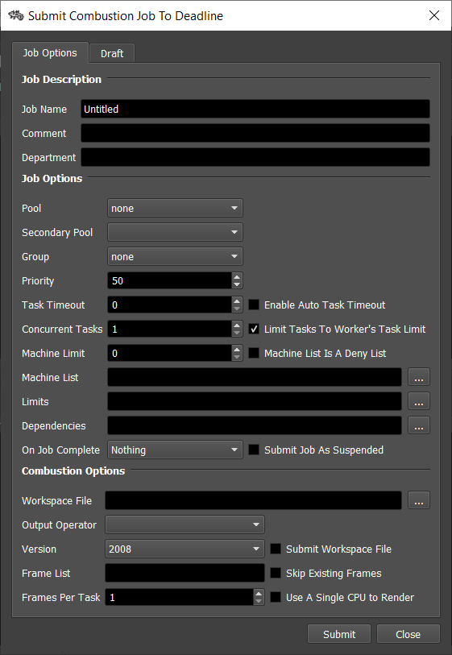
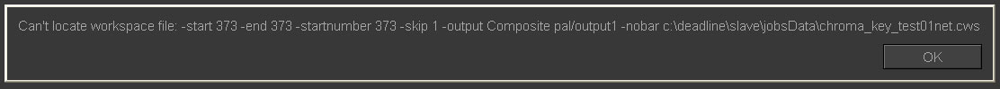

Combustion¶
Job Submission¶
You can submit Combustion jobs from the Monitor.
Workspace Configuration¶
In Combustion, when you are ready to submit your workspace, open the Render Queue by selecting File -> Render… (CTRL+R).
Select which items you want to render in the box on the left.
Configure your output settings under the tab Output Settings.
Under the tab Global Settings, specify an Input Folder (a shared folder where all the footage for you workspace can be found) and an Output Folder (a shared folder where the output will be dumped). Note that Combustion will search any subfolders in you Input Folder for footage as well.
Close the Render Queue and save your workspace.
Submission Options¶
The general Deadline options are explained in the Job Submission documentation, and the Draft/Integration options are explained in the Draft and Integration documentation. The Combustion specific options are:
Workspace File: The Combustion workspace file to be rendered.
Output Operator: Select the output operator in the workspace file to render. The render will fail if the operator cannot be found.
Version: The version of Combustion to render with.
Skip Existing Frames: Skip over existing frames during rendering (version 4 and later only).
Use Only One CPU To Render: Limit rendering to one CPU (version 4 and later only).
Plugin Configuration¶
You can configure the Combustion plugin settings from the Monitor. While in power user mode, select Tools -> Configure Plugins and select the Combustion plugin from the list on the left.

Render Executables
Combustion Executable: The path to the ShellRender executable file used for rendering. Enter alternative paths on separate lines. Different executable paths can be configured for each version installed on your render nodes.
FAQ¶
Which versions of Combustion are supported?
Combustion 4 and later are supported.
All my input footage is spread out over the network, so how do I specify a single Input Folder during submission?
When Combustion is given an Input Folder, it will search all subfolders for the required footage until the footage is found. So if you have a root folder that all of your footage branches off from, you should specify that root as the Input Folder.
Are there any issues with referencing a file in the global input folder when one or more other files exist with the same name?
Yes. When there is a file in the scene that has the same name as a file in another subdirectory, the network renderer will reference the first file with that name that it finds. It ignores the direct path to the correct subdirectory.
Can Deadline render multiple outputs?
No. Only one output can be enabled in your Combustion workspace. If no outputs are enabled, or multiple outputs are enabled, the workspace cannot be submitted to Deadline.
When rendering, I receive a pop up error message. Since rendering is supposed to be silent, should I not be getting error messages like this in the first place?
Make sure that you’re using ShellRenderer.exe as the render executable, (combustion.exe starts up Combustion normally, while ShellRenderer.exe is the command line rendering appliation). You can make the switch in the Plugin Configuration (Tools -> Configure Plugins in the Monitor while in power user mode).
Why isn’t path mapping working properly between Windows and Mac?
On the Mac, the Combustion workspace file saves network paths in the form share:\\folder\…, so you have to set up your Path Mapping settings in the Repository options accordingly.
Error Messages And Meanings¶
This is a collection of known Combustion error messages and their meanings, as well as possible solutions. We want to keep this list as up to date as possible, so if you run into an error message that isn’t listed here, please visit the Thinkbox Help Centre and let us know.
Currently, no error messages have been reported for this plugin.

{kind=link}
{kind=link}
{kind=link}
{kind=link}